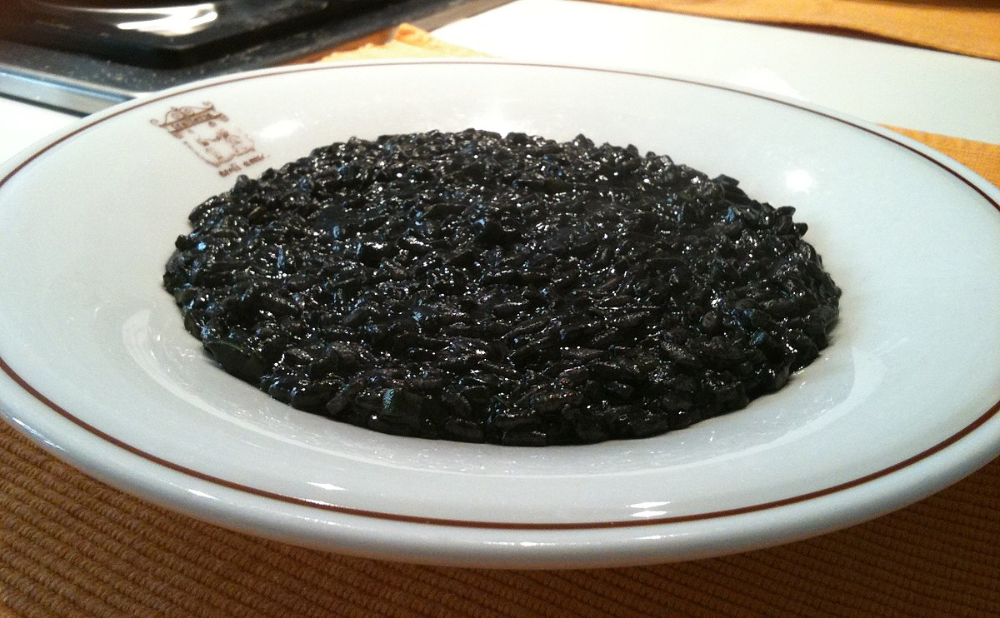

Veneto
Veneto is a major wine-producing region in Italy. It is known for its diverse range of wines, including Prosecco, Amarone, Soave, and Valpolicella
Risotto al nero di seppia - Squid ink risotto

The ingredients include:
- Risotto rice
- Squid ink
- White wine
- Chicken or vegetable broth
- Olive oil
- Onion, finely chopped
- Garlic, minced
- Parmesan cheese, grated
- Butter
- Salt and pepper
- Fresh parsley, chopped (for garnish)